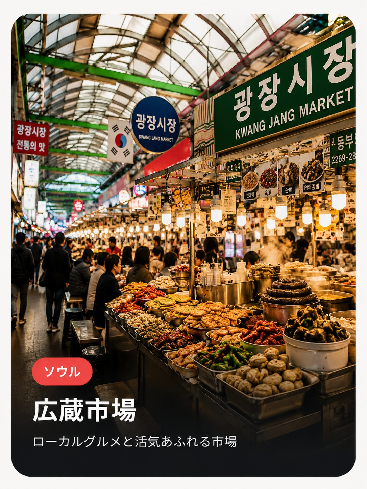

1905年創業、ソウルで最も歴史ある伝統市場のひとつ。もともとは日用品や布地を扱う市場として発展したが、今では屋台グルメがひしめく「食のワンダーランド」として国内外の観光客に大人気のスポットになっている。アーケード状の通路に何百もの屋台と老舗が軒を連ね、昼夜を問わず活気に満ちている。
見どころ
ビンデトク横丁
石臼で挽いた緑豆をその場で豪快に焼き上げる、市場名物の緑豆チヂミ。パリッとした食感と香ばしさが人気で、発祥の地とも言われている。
ユッケ通り
新鮮な生の牛肉を使ったユッケの専門店が集まる一角。梨と一緒に提供されるのが定番で、市場価格ならではのコストパフォーマンスも魅力。
マッククス
そば粉を使った江原道発祥の冷たい麺料理。さっぱりとした後味でヤンニョムと絡めて食べる、市場グルメの定番のひとつ。
布・韓服エリア
市場の2階には伝統韓服やチマチョゴリ用の生地を扱う老舗が多数。食べ歩きだけでなく、韓国の伝統文化に触れられるのも広蔵市場ならでは。
楽しみ方のヒント
昼〜夕方にかけてが最も活気があり、屋台での立ち食いスタイルが基本。屋台では現金払いのお店も多いため、少し多めに現金を持っておくと安心。混雑時は相席が当たり前なので、気負わずローカルの雰囲気を楽しんでほしい。
広蔵市場は地元の人々の生活に根ざした市場でもあるため、写真撮影の際は周囲へのちょっとした気配りを。食べ歩きの合間に布地・韓服エリアを覗いてみるのもおすすめ。
- 住所
- ソウル特別市 鍾路区 昌慶宮路88
- 訪問時間・所要
- 9:00〜22:00頃（店舗により異なる。ビンデトク通りは夜まで賑わう）。滞在目安1〜1.5時間
- 目安予算
- 屋台グルメ1品5,000〜15,000ウォン程度
- アクセス
- 地下鉄1号線 鍾路5街駅8番出口からすぐ
💡 名物はビンデトク（緑豆チヂミ）・ユッケ・マッククス。1905年創業、ソウル最古の伝統市場のひとつ。